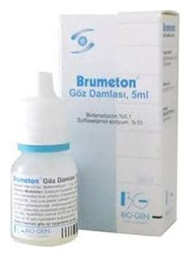

Brumeton 1 mg/ml+100 mg/ml Göz Damlası

Ne için kullanılır
KT · Bölüm 15 ml’lik solüsyon içeren, karton kutuda sunulan, beyaz kapaklı şeffaf plastik bir şişe içinde açık sarı renk solüsyon içeren, kullanıma hazır steril göz damlasıdır.
BRUMETON®gözün ön kısmında gözün gelişebilecek alerjik ve iltihabi hastalıkların bölgesel tedavisinde ve bu hastalıkların önlenmesinde kullanılır.
Bu ilacı kullanmaya başlamadan önce bu KULLANMA TALİMATINI dikkatlice okuyunuz, çünkü sizin için önemli bilgiler içermektedir.
Bu kullanma talimatını saklayınız. Daha sonra tekrar okumaya ihtiyaç duyabilirsiniz. Eğer ilave sorularınız olursa, lütfen doktorunuza veya eczacınıza danışınız. Bu ilaç kişisel olarak size reçete edilmiştir, başkalarına vermeyiniz. Bu ilacın kullanımı sırasında doktora veya hastaneye gittiğinizde doktorunuza bu ilacı kullandığınızı söyleyiniz. Bu talimatta yazılanlara aynen uyunuz. İlaç hakkında size önerilen dozun dışında yüksek veya düşük doz kullanmayınız.
Bu hastalıklara aşağıdaki durumlar dâhildir:
Başlıca stafilokok, streptokok, pnömokok, Haemophilus influentiae ve Moraxella lacunata, Klebsiella pneumoniae, Escherichia coli, Aerobacter aerogenes isimli mikroorganizmalar ve Sulfasetamid etkin maddesine duyarlı diğer mikroorganizmalar nedeniyle meydana gelen yüzeyel göz enfeksiyonlarında “Konjunktivit” adı verilen, göz kapağının iç yüzünün iltihabında (sebebi yağ bezlerinin aşırı salgı meydana getirmesi, alerji ya da stafilokok cinsi bakteriler olabilir), Hem kronik (uzun süredir devam eden) hem de alerjik akut (aniden şiddetle ortaya çıkan) göz kapağı iltihabında, Göz küresinin saydam ön kısmının (kornea) doku boşluğunun iltihabında, Göz kapağı ile göz kapağının iç yüzünün beraber iltihabında, Sklera ve episklera isimli göz dokularının iltihaplarında, İris adı verilen göz dokusunun iltihabında İris ve kirpiksi cismin beraber iltihabı (iridosiklit) durumunda